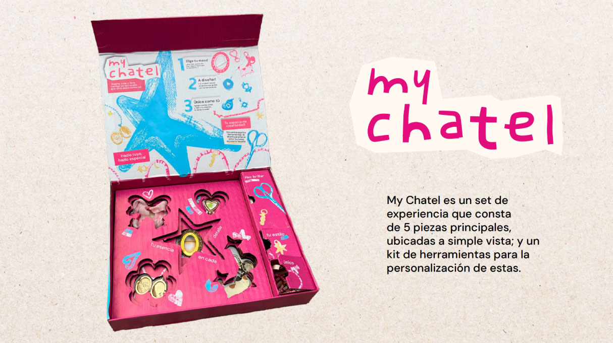
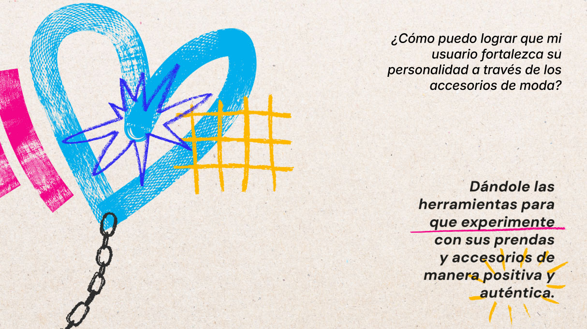
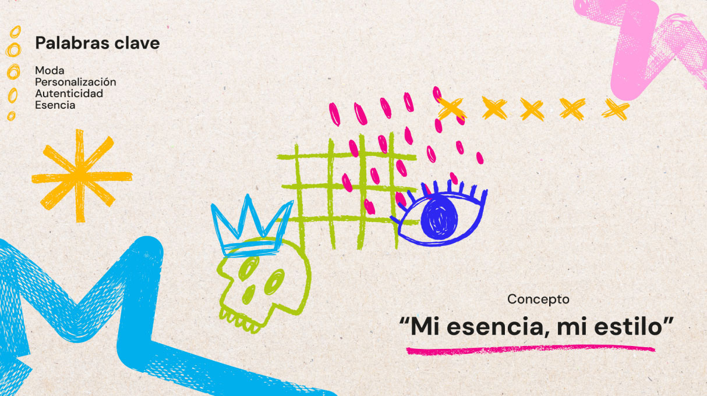
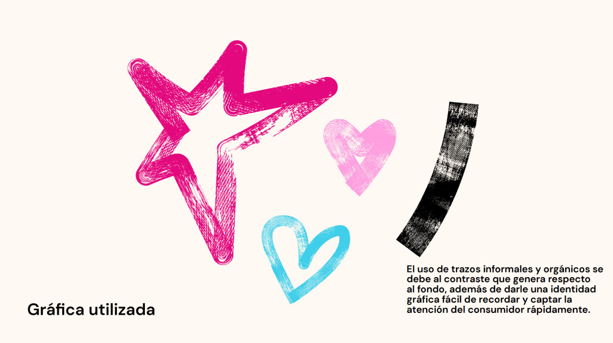
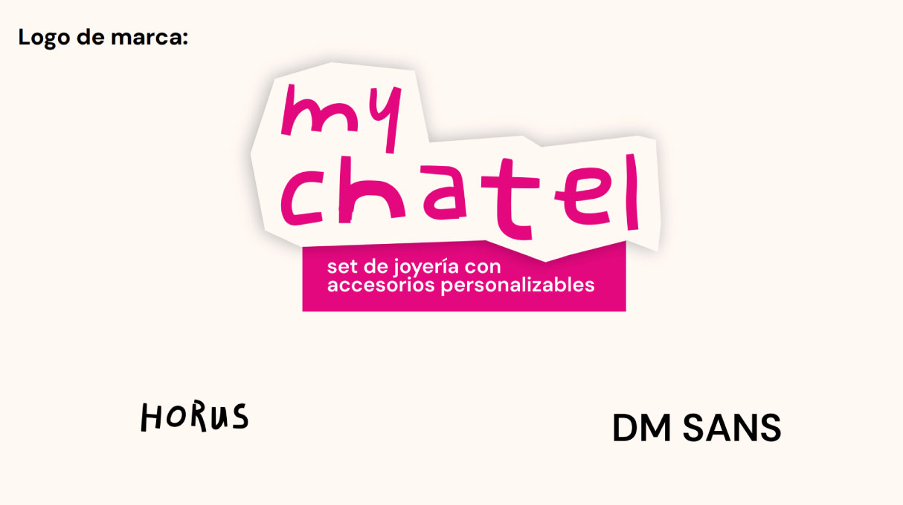
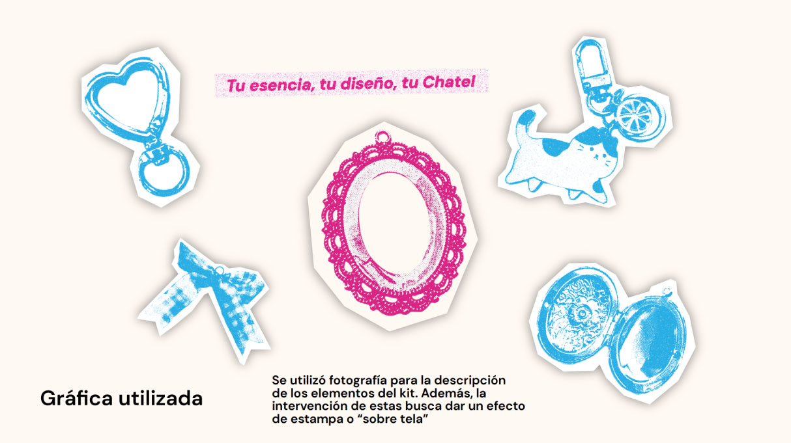
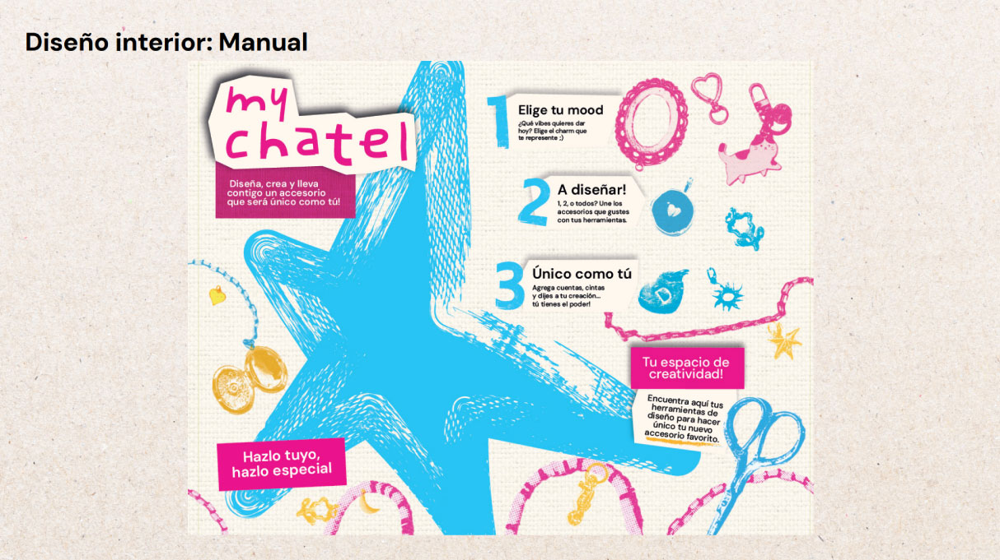
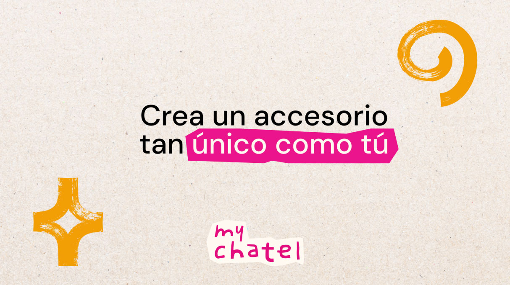

Identidad Visual — Packaging — Diseño de Producto
My Chatel
My Chatel transforma el accesorio en una herramienta de juego. Un sistema de 5 charms y un kit de personalización que invita al usuario a intervenir las piezas, explorando su identidad de forma tangible. No es solo joyería, es un diseño de experiencia abierto y adaptable.
       ↑